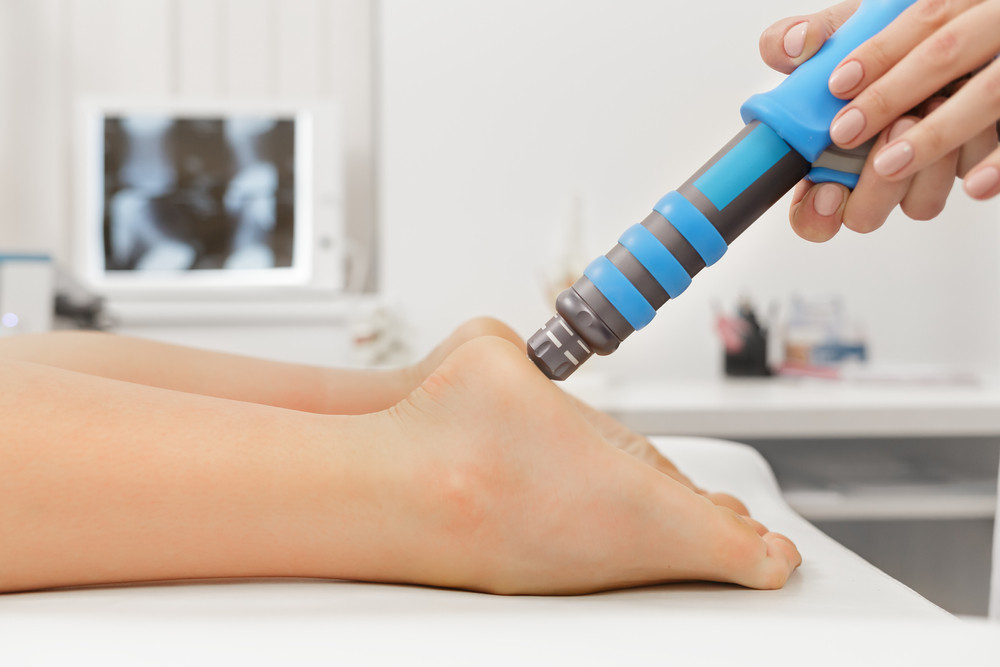

Shockwave Therapy: A Powerful Solution for Chronic Pain Relief 3 August 2026 Hussein Eshref  Shockwave Therapy in Angel: What It Is and Why It Works for Stubborn Pain If you have been dealing with pain that simply will not shift, you are not alone. In over 30 years of practice as an osteopath, I have seen patients arrive at Canonbury Clinic having tried rest, anti-inflammatories, and multiple rounds of conventional physiotherapy, only to find themselves back at square one. The pain is still there. The function is still limited. The frustration is real. Shockwave therapy is one of the tools I now use for exactly these situations. For chronic, long-standing musculoskeletal problems that have not responded well to other approaches, it offers a different mechanism of action and, for many patients, a meaningful shift in their recovery. If you are based in Angel, Islington, or the surrounding area and you are wondering whether shockwave therapy is right for you, this post covers the essentials. What Shockwave Therapy Actually Does Shockwave therapy delivers high-energy acoustic waves to targeted areas of soft tissue and bone. The device is applied directly to the skin over the affected area, and the waves pass into the tissue, stimulating a biological response at the cellular level. The key effects are worth understanding because they explain why this approach is used for chronic rather than acute conditions. The acoustic energy can help break down calcifications within tendons, which are a common driver of ongoing pain in conditions like calcific tendinopathy. It also stimulates increased blood flow and cell activity in tissue that has become dormant or poorly vascularised over time. Chronic tendon problems, in particular, often involve tissue that has essentially stopped trying to heal. Shockwave gives it a reason to start again. At Canonbury Clinic, I use shockwave as part of a structured treatment plan rather than as a standalone intervention. Understanding the root cause of your pain matters. Getting you moving correctly matters. Shockwave accelerates the process, but it works best when combined with hands-on osteopathic work and a clear rehabilitation strategy. You can read more about how we approach shockwave therapy at Canonbury Clinic and the specific conditions it is commonly used for. The Conditions It Is Most Commonly Used For In my clinical experience, shockwave therapy delivers the most consistent results with conditions that are genuinely chronic and have not responded to standard treatment over a reasonable period. These include: Plantar fasciitis, particularly when there is calcification at the heel Achilles tendinopathy, both insertional and mid-portion Rotator cuff tendinopathy and calcific deposits in the shoulder Patellar tendinopathy affecting the knee Lateral epicondylalgia, commonly called tennis elbow Gluteal tendinopathy causing hip and buttock pain These are conditions where tissue has had time to become structurally disrupted. Calcifications have formed. The normal healing cycle has stalled. That is precisely where shockwave can help by delivering a controlled stimulus that the body responds to with renewed repair activity. For patients dealing with tissue that has become chronically inflamed or where conventional approaches have not been sufficient, I also consider whether laser therapy at our clinic may complement the treatment programme. The two can work well together depending on the tissue involved and the stage of the condition. Why Chronic Problems Need a Different Approach This is something I feel strongly about. When pain has been present for months or years, the tissue involved is often in a different physiological state than acutely injured tissue. There is less inflammation driving the healing response. The tendon or soft tissue may have undergone degenerative changes. Standard advice to rest and use ice or anti-inflammatories is not always relevant or helpful at this stage. What the tissue often needs is a targeted stimulus that restarts the healing process rather than one that suppresses it. Shockwave is designed to do exactly that. It does not mask the pain. It works at the level of the tissue, supporting the conditions needed for genuine structural recovery. I am not suggesting it works for everyone or in every situation. But for the right patient with the right presentation, it can help where other approaches have not. What to Expect at Canonbury Clinic in Angel When you come in for shockwave therapy at Canonbury Clinic, the first step is always a thorough assessment. I need to understand your history, your movement patterns, and what has or has not worked before. There is no value in applying shockwave to an area without understanding why that area is under stress in the first place. Treatment sessions are typically short, lasting around 15 to 20 minutes for the shockwave component, and most patients notice a change over a course of three to six sessions. Some people feel a reduction in pain relatively quickly. Others notice improvement more gradually as the tissue responds and heals. I will give you an honest picture of what to expect based on your specific situation. The clinic is located in Islington, easily accessible from Angel and the surrounding areas including Highbury, Canonbury, Barnsbury, and Clerkenwell. Frequently Asked Questions Is shockwave therapy painful? Most patients describe a degree of discomfort during treatment, particularly over sensitive or calcified areas. The intensity can be adjusted to keep treatment within a tolerable range. Any discomfort during the session is typically short-lived, and many patients find it settles quickly once the session is complete. How many sessions will I need? This depends on the condition, how long you have had it, and how your tissue responds. Most treatment programmes involve three to six sessions spaced a week apart. I will give you a clearer picture after your initial assessment. Can shockwave therapy help if I have had pain for years? Chronic, long-standing conditions are precisely the cases where shockwave is most commonly indicated. Tissue that has not healed through conventional means may respond to the targeted stimulus shockwave provides. A thorough assessment will help determine whether it is appropriate for your situation. Do I need a referral to access shockwave therapy at Canonbury Clinic? No referral is needed. You can contact the clinic directly to arrange an initial assessment. We will take a full history and assess whether shockwave therapy is the right option for you. Is shockwave therapy suitable for everyone? There are certain contraindications, including pregnancy, blood clotting disorders, active infections over the treatment area, and specific cardiac conditions. During your assessment, I will review your health history to confirm whether shockwave therapy is appropriate and safe for you. Share:
Shockwave Therapy in Angel: What It Is and Why It Works for Stubborn Pain If you have been dealing with pain that simply will not shift, you are not alone. In over 30 years of practice as an osteopath, I have seen patients arrive at Canonbury Clinic having tried rest, anti-inflammatories, and multiple rounds of conventional physiotherapy, only to find themselves back at square one. The pain is still there. The function is still limited. The frustration is real. Shockwave therapy is one of the tools I now use for exactly these situations. For chronic, long-standing musculoskeletal problems that have not responded well to other approaches, it offers a different mechanism of action and, for many patients, a meaningful shift in their recovery. If you are based in Angel, Islington, or the surrounding area and you are wondering whether shockwave therapy is right for you, this post covers the essentials. What Shockwave Therapy Actually Does Shockwave therapy delivers high-energy acoustic waves to targeted areas of soft tissue and bone. The device is applied directly to the skin over the affected area, and the waves pass into the tissue, stimulating a biological response at the cellular level. The key effects are worth understanding because they explain why this approach is used for chronic rather than acute conditions. The acoustic energy can help break down calcifications within tendons, which are a common driver of ongoing pain in conditions like calcific tendinopathy. It also stimulates increased blood flow and cell activity in tissue that has become dormant or poorly vascularised over time. Chronic tendon problems, in particular, often involve tissue that has essentially stopped trying to heal. Shockwave gives it a reason to start again. At Canonbury Clinic, I use shockwave as part of a structured treatment plan rather than as a standalone intervention. Understanding the root cause of your pain matters. Getting you moving correctly matters. Shockwave accelerates the process, but it works best when combined with hands-on osteopathic work and a clear rehabilitation strategy. You can read more about how we approach shockwave therapy at Canonbury Clinic and the specific conditions it is commonly used for. The Conditions It Is Most Commonly Used For In my clinical experience, shockwave therapy delivers the most consistent results with conditions that are genuinely chronic and have not responded to standard treatment over a reasonable period. These include: Plantar fasciitis, particularly when there is calcification at the heel Achilles tendinopathy, both insertional and mid-portion Rotator cuff tendinopathy and calcific deposits in the shoulder Patellar tendinopathy affecting the knee Lateral epicondylalgia, commonly called tennis elbow Gluteal tendinopathy causing hip and buttock pain These are conditions where tissue has had time to become structurally disrupted. Calcifications have formed. The normal healing cycle has stalled. That is precisely where shockwave can help by delivering a controlled stimulus that the body responds to with renewed repair activity. For patients dealing with tissue that has become chronically inflamed or where conventional approaches have not been sufficient, I also consider whether laser therapy at our clinic may complement the treatment programme. The two can work well together depending on the tissue involved and the stage of the condition. Why Chronic Problems Need a Different Approach This is something I feel strongly about. When pain has been present for months or years, the tissue involved is often in a different physiological state than acutely injured tissue. There is less inflammation driving the healing response. The tendon or soft tissue may have undergone degenerative changes. Standard advice to rest and use ice or anti-inflammatories is not always relevant or helpful at this stage. What the tissue often needs is a targeted stimulus that restarts the healing process rather than one that suppresses it. Shockwave is designed to do exactly that. It does not mask the pain. It works at the level of the tissue, supporting the conditions needed for genuine structural recovery. I am not suggesting it works for everyone or in every situation. But for the right patient with the right presentation, it can help where other approaches have not. What to Expect at Canonbury Clinic in Angel When you come in for shockwave therapy at Canonbury Clinic, the first step is always a thorough assessment. I need to understand your history, your movement patterns, and what has or has not worked before. There is no value in applying shockwave to an area without understanding why that area is under stress in the first place. Treatment sessions are typically short, lasting around 15 to 20 minutes for the shockwave component, and most patients notice a change over a course of three to six sessions. Some people feel a reduction in pain relatively quickly. Others notice improvement more gradually as the tissue responds and heals. I will give you an honest picture of what to expect based on your specific situation. The clinic is located in Islington, easily accessible from Angel and the surrounding areas including Highbury, Canonbury, Barnsbury, and Clerkenwell. Frequently Asked Questions Is shockwave therapy painful? Most patients describe a degree of discomfort during treatment, particularly over sensitive or calcified areas. The intensity can be adjusted to keep treatment within a tolerable range. Any discomfort during the session is typically short-lived, and many patients find it settles quickly once the session is complete. How many sessions will I need? This depends on the condition, how long you have had it, and how your tissue responds. Most treatment programmes involve three to six sessions spaced a week apart. I will give you a clearer picture after your initial assessment. Can shockwave therapy help if I have had pain for years? Chronic, long-standing conditions are precisely the cases where shockwave is most commonly indicated. Tissue that has not healed through conventional means may respond to the targeted stimulus shockwave provides. A thorough assessment will help determine whether it is appropriate for your situation. Do I need a referral to access shockwave therapy at Canonbury Clinic? No referral is needed. You can contact the clinic directly to arrange an initial assessment. We will take a full history and assess whether shockwave therapy is the right option for you. Is shockwave therapy suitable for everyone? There are certain contraindications, including pregnancy, blood clotting disorders, active infections over the treatment area, and specific cardiac conditions. During your assessment, I will review your health history to confirm whether shockwave therapy is appropriate and safe for you.